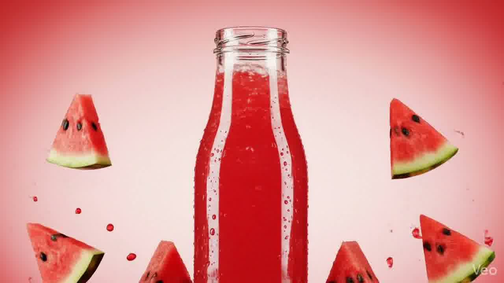

Raw & Unfiltered
Pure Watermelon
Cold-Pressed Extract
Every drop is extracted without heat, locking in natural flavor and essential nutrients.
Zero Added Sugar.
Nature's sweetness needs no enhancement. Experience 100% natural hydration.
Raw & Unfiltered
Every drop is extracted without heat, locking in natural flavor and essential nutrients.
Nature's sweetness needs no enhancement. Experience 100% natural hydration.
"We believe that the best ingredients are uncompromised. No concentrates, no artificial flavors.
Just pure watermelon."
Our watermelons are hand-picked at peak ripeness from sustainable farms. Within hours, they are cold-pressed using massive hydraulic pressure rather than heat.
This meticulous process ensures that enzymes, vitamins, and the delicate natural flavor profile are kept fully intact, delivering a vibrant, fresh-from-the-melon experience.
Discover More
Standard juices are pasteurized with heat, which destroys nutrients. We strictly use high-pressure processing.
Zero sugar, zero preservatives, zero water added. Just the pure, vibrant juice from fresh watermelons.
Bottled in highly recyclable premium glass, ensuring sustainability and avoiding plastic chemicals.
Experience the most refreshing, nutrient-dense watermelon juice ever created. Delivered fresh to your door.